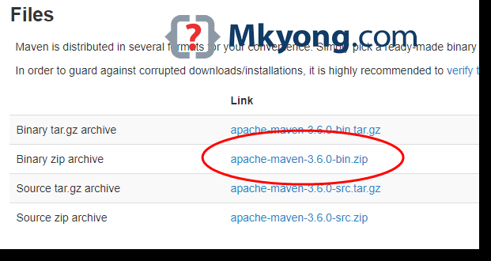
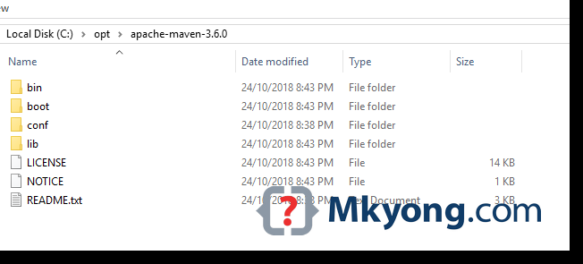
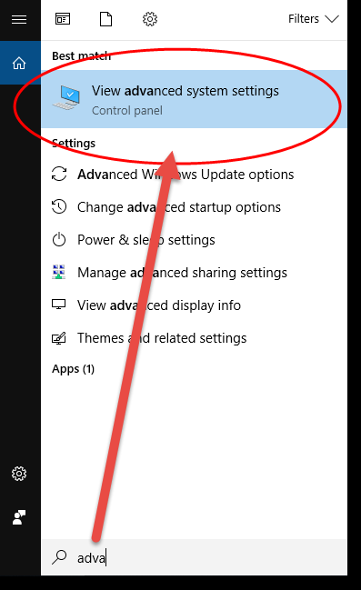
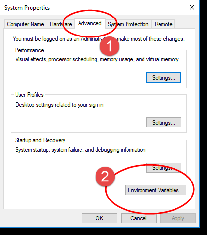
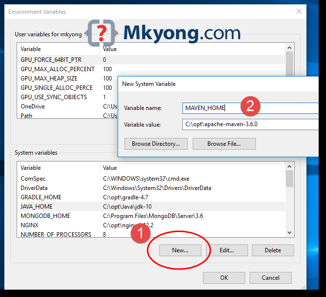

Visit Maven official website, download the Maven zip file, for example : apache-maven-3.6.0-bin.zip.

Unzip it to a folder. In this article, we are using c:\opt\apache-maven-3.6.0

Note
Add a MAVEN_HOME system variables, and point it to the Maven folder.
Press Windows key, type adva and clicks on the View advanced system settings

In System Properties dialog, select Advanced tab and clicks on the Environment Variables... button.

In “Environment variables” dialog, System variables, Clicks on the New... button and add a MAVEN_HOME variable and point it to c:\opt\apache-maven-3.6.0

In system variables, find PATH, clicks on the Edit... button. In “Edit environment variable” dialog, clicks on the New button and add this %MAVEN_HOME%\bin
Done, start a new command prompt, type mvn –version :
mvn -version
Apache Maven 3.6.0 (97c98ec64a1fdfee7767ce5ffb20918da4f719f3; 2018-10-25T02:41:47+08:00)
Maven home: C:\opt\apache-maven-3.6.0\bin\..
Java version: 10.0.1, vendor: Oracle Corporation, runtime: C:\opt\Java\jdk-10
Default locale: en_MY, platform encoding: Cp1252
OS name: "windows 10", version: "10.0", arch: "amd64", family: "windows"
echo %MAVEN_HOME%
C:\opt\apache-maven-3.6.0
The Apache Maven is installed successfully on Windows.
参考连接：